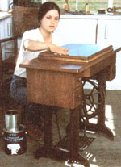

Quality materials, good lighting, and a dustfree work space are essential to achieving the best refinishing results. Here, Nancy Hall handrubs the second finish coat of polyurethane onto an antique treadle sewing machine cabinet.